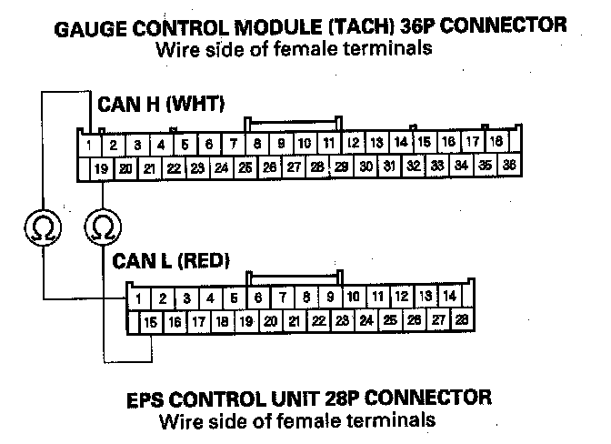

B1183
DTC B1183: Gauge Control Module Lost Communication with the EPS Control Unit (EPS Message)1. Clear the DTCs with the HDS.
2. Turn the ignition switch OFF, and then back ON (II).
3. Wait for 6 seconds or more.
4. Check for DTCs with the HDS.
Is DTC B1183 indicated?
YES - Go to step 5.
NO - Intermittent failure. The gauge control module (tach) is OK at this time. Check for loose or poor connections.
5. Check for DTCs with the HDS.
Are DTCs B1168, B1169, B1178, and B1187 and indicated at the same time?
YES - Troubleshoot DTC B1178.
NO - Go to step 6.
6. Check for EPS DTCs with the HDS.
Are any DTCs indicated?
YES - Go to the indicated DTC troubleshooting, then recheck.
NO - Go to step 7.
7. Turn the ignition switch OFF.
8. Disconnect the gauge control module (tach) 36P connector.
9. Disconnect the EPS control unit 28P connector.

10. Check for continuity between the gauge control module (tach) 36P connector No.1 and No. 19 and EPS control unit 28P connector No.1 and No. 15 terminals individually.
Are there continuity?
YES - Substitute a known-good EPS control unit and recheck. If DTC B1183 is still indicated, replace the gauge control module (tach).
NO - Repair an open in the wire.